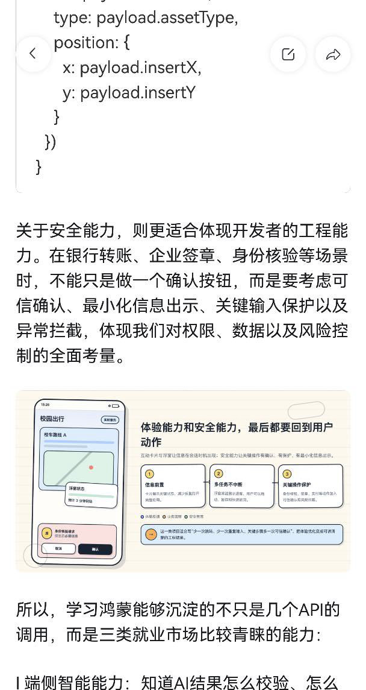
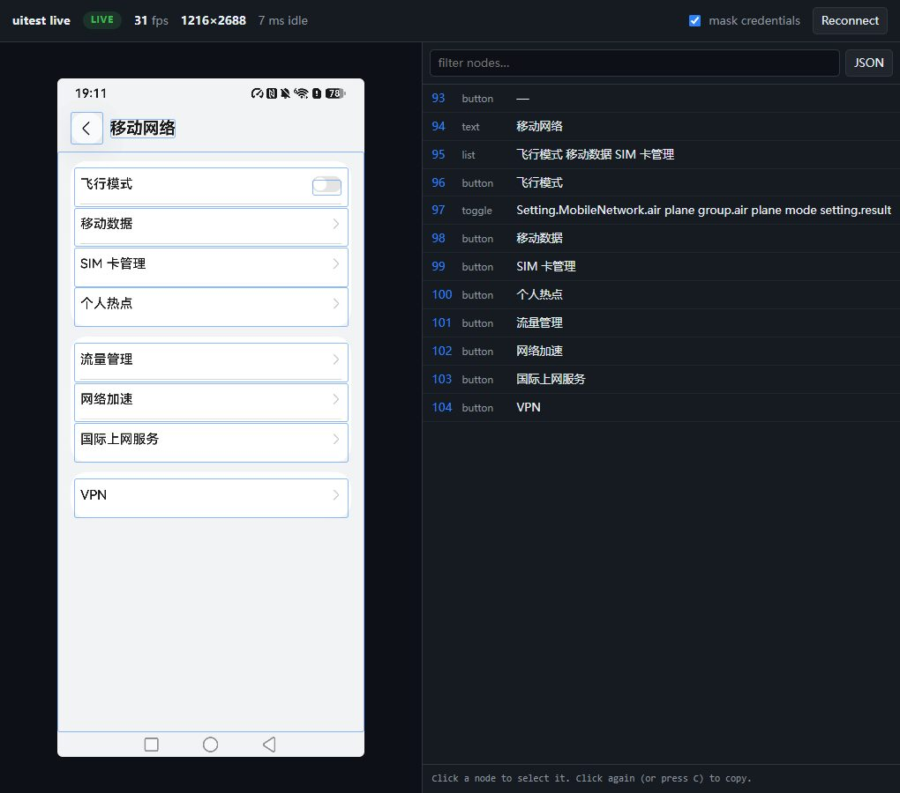
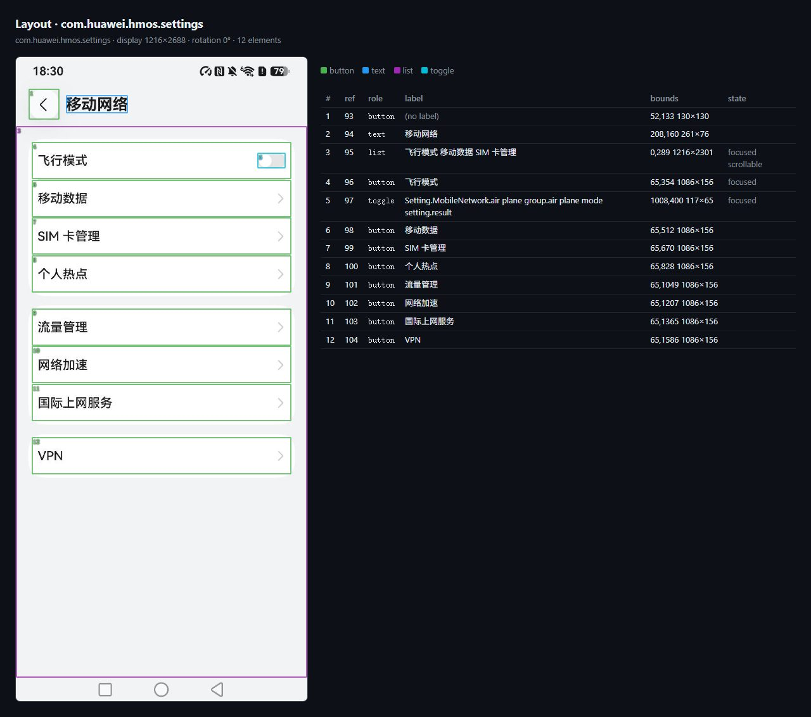

uitest-sdk · 库
connect()返回一个会话，按用途分成observe/act/wait/cast/view/govern。- 投屏、inspect 面板、浏览器输入与来源校验都只有一份实现，第三方产品同样能用。
- 没有可执行文件，也没有界面。
npm install uitest-sdk
HarmonyOS uitest 扩展 · Node.js SDK
UI automation, screenshots and H.264 casting for HarmonyOS — from Node.js.
把设备侧的 agent.so 与 libscreen_casting.z.so 封装成类型化 API：点击、滑动、截图、H.264 投流与 MP4 录制，走的是扩展自己的长连接，不是 hdc 的慢路径。库之上是三个产品——给 Agent 的命令行、给人的浏览器界面，和一个鸿蒙版 scrcpy。
npm install uitest-sdk

投屏、inspect、输入和治理都在库里；产品只组合它们，各自安装、各自发版。给 Agent 的那个没有界面，给人的那个只有浏览器页面。
uitest-sdk · 库connect() 返回一个会话，按用途分成 observe / act / wait / cast / view / govern。npm install uitest-sdk
uitest-phone · Agentapprovals list|allow|deny；Agent 拿到 id 也不能自己批准。npm i -g uitest-phone
uitest-console · 人npm i -g uitest-console
uitest-mirror · 鸿蒙版 scrcpy--record 从第一帧录到关窗；--max-size 按最长边换算成传输自己的缩放。npm i -g uitest-mirror
依赖只有一个方向：三个产品 → 库。产品之间互不依赖，库里没有产品代码；CI 的 scripts/check-layers.mjs 会拦住任何一次反向引用。
$ npm install uitest-sdk $ node quickstart.mjs ✓ connected BRA-AL00 · 1216×2688 ✓ tap(608, 1344) 32 ms ✓ screenshot() → screen.jpg 118 ms
uitest-phone 是一个独立的包，装在需要驱动手机的 Agent 上：每条命令开一次设备、执行一步、等 UI 稳定、打印屏幕或 diff、释放设备。同一套命令还能以 MCP 暴露给 Agent——写代码不是前提。
$ npx uitest-phone doctor settled · doctor targets: dev-<8 位哈希> capabilities: waitForIdle=yes findComponent=yes $ npx uitest-phone observe --task "check WLAN" settled screen 1216x2688 · app: com.huawei.hmos.settings [65] button "WLAN" @608,432 focused checked [66] toggle "WLAN" @1067,433 checked
真实输出，2026-11-16 真机 BRA-AL00。序列号只以 8 位哈希出现。
需要省掉每步的设备启动开销时，用 uitest-phone mcp：一个进程、一次连接、逐步调用。
observe | 读屏，每个元素一行，带 ref、角色、标签与中心点 |
tap | 按 ref、按标签或按 selector 点击；--long 长按 |
type | 输入文本，走设备 IME，中文与 emoji 可用；--paste 一次粘贴，长文本快一倍 |
swipe | 方向或两点滑动 |
double-click | 双击 |
drag | 先按住再移动，用于拖拽排序 |
fling | 短促快滑，松手后列表继续滑行 |
pinch | 双指缩放，走设备 PointerMatrix |
key | back / home / power / enter 等系统键 |
wait-for | 等某个标签出现，设备侧一次往返 |
read-list | 逐屏读完整个列表，每个标签只出现一次 |
scroll-until | 逐屏翻到目标标签为止 |
launch | 按别名或 bundle 启动，自动读入口 ability |
apps | 列已装应用；--current 当前应用；--has 是否安装 |
window | 焦点窗口或某 bundle 的窗口，可 --focus / --close |
doctor | 探测设备与所需能力 |
screenshot | 存一张 JPEG，报告帧尺寸与缩放因子 |
inspect | 把每个元素框出并编号（编号即 ref）；--html 另存可悬停的面板 |
report | 把整轮任务写成自包含 HTML 报告 |
status | 当前任务、设备哈希、策略设置 |
handoff | 请人接手（登录、验证码、解锁），设备交给人直到 resume |
uitest-consoleuitest-console 起一个本地页面：左边是投屏，右边是当前屏的节点表。tap --ref 共用。createImageBitmap。redact: false 重新读布局，原文才出现——遮罩是在读的时候做的。idle → starting → live → reconnecting → stopping → stopped，失败按 0.5/1/2/4/5 s 退避重启。decodeQueueSize > 4 时同样丢。<state-dir>/refs-<hash>.json。observe 打印的 [65] 在下一条 tap --ref 65 里仍指向同一元素。not_found，不会悄悄指向别的控件。approval_pending 给出的 id 存在 approvals/<hash>/，请求与决定是两个文件。uitest-phone approvals allow|deny 或 console 的收件箱回答；id 一次性、60 秒过期。stale，不会执行到别的东西上。observe 与 diff 里显示为 ••••••。captureLayout() 保持原样。report 按 task 从磁盘读回来、跨文件重新编号。apps、launch 这类不走屏幕动作的命令。--trace-shots 每步存一张截图，链接相对报告自身。| 命令 | 实测 | 说明 |
|---|---|---|
status | 1.2 s | 只读状态文件，不碰设备 |
apps --current | 1.5 s | 一次 hdc 查询 |
observe | 1.7 s | 读屏 + 稳定 + 记录 |
doctor | 1.9 s | 探测 5 项能力 |
tap --ref | 2.3 s | 读屏 + 点击 + 等稳定 |
每条命令都是一次独立进程：设备打开、执行一步、等 UI 稳定、释放。数字是 2026-11-16 真机上 2–3 次采样的范围，含 Node 启动；设备侧动作本身仍是 SDK 的毫秒级。
npx uitest-phone connect # 把 MCP 注册写进 Agent 自己的配置，并装好 Skill
npx uitest-phone connect --agent gemini # 也支持 codex、copilot
npx uitest-phone mcp # stdio 上暴露 uitest_<command>，整个进程只开一次设备
npx uitest-phone install-skill # 写 ~/.claude/skills 与 ~/.agents/skills 两处Skill 与二进制同版本发布。Agent 拿到的是「先 observe、再按 ref 动作、读 diff」的固定循环，以及一组它必须遵守的安全规则。
connect、hold、handoff、resume 从 0.3.0 起提供，connect --agent gemini|copilot、设备状态与审批记忆从 0.4.0 起提供，dev.hypium 的 118 个方法从 0.5.0 起提供，7.0 WebSocket 投流（transport: "ws"）从 0.6.0 起提供，inspect、dev.files、CastConfig、FpsMeter 与浏览器里的投屏从 0.7.0 起提供；接管输入从 0.9.0 起提供。0.10.0 起命令行、MCP 与 Skill 是独立的 uitest-phone，浏览器界面是 uitest-console。
connect 直接编辑 Agent 的设置文件，不再给人一段 JSON 让他手贴。~/.claude/skills 给 Claude Code；~/.agents/skills 是跨 runtime 别名。uitest-phone hold 把设备交给此时拿着手机的人，连正在运行的 MCP 会话也一并让出。handoff --reason "请登录" 把手机交给人，并停下等 resume。lease_held（退出码 2）停下，不重试、不抢回。resume 交还后，同一个会话下一条命令自动继续，不用重启。| 状态 | 退出码 | 含义 |
|---|---|---|
settled | 0 | 执行完且 UI 已稳定 |
uncertain | 1 | 等不到 UI 停止变化 |
not_found | 1 | ref、标签或列表不在屏幕上 |
lease_held | 2 | 另一个任务——或人——占着这台设备 |
handoff | 2 | Agent 主动把手机交给人，等对方 resume |
approval_pending | 3 | 需要人确认这一步 |
blocked | 4 | 策略在碰设备前就拒绝了 |
approval_denied | 4 | 审批 id 错误、用过或过期 |
stale | 4 | 等待审批期间页面变了 |
点「接管」之后，画布就是设备：点击、长按、拖动、滚动、双指缩放、键盘输入都走一条独立的输入通道，读布局的那条通道不受影响。下面的画面来自真机上的知乎，不是重绘。

键盘通道待输入
默认只读；点「接管」才注入。另一个人正在操作时，第二个页面会被明确拒绝，不会出现两边同时点的画面。
两张都是真实页面截下来的，没有重画。图上的黄色高亮由页面自己按节点坐标播放：选中的那一行和手机画面上对应的框同时亮起，就是你在 live 里点一行时看到的样子。

左右滑动看完整页面
uitest-console · 浏览器里投屏 + 节点表
[100] button 个人热点 [101] button 流量管理 [104] button VPN
bounds 画，和设备分辨率同一个坐标系，不会随窗口缩放错位。VideoDecoder 解码；页面上写着它此刻的 fps 和距上一帧的时间。mask credentials，账号、验证码这类文本在布局被读出来的那一刻就被替换，不是给视频打码。
左右滑动看完整页面
inspect --html · 单文件布局面板
#4 · ref 96 · button 飞行模式 #9 · ref 101 · button 流量管理 #12 · ref 104 · button VPN
# 行；那一行的 ref 可以直接交给 tap --ref。bounds 与状态（focused / scrollable），排版问题不用靠猜。--json 输出，报告和面板用的是同一个结构。同一台真机、同一个脚本跑出来的对比（scripts/bench-compare.ts）。hdc CLI 的数字包含 hdc 进程启动、shell 往返与 uitest 启动——也就是手敲命令时真正付出的时间。
| 操作 | 本 SDK | hdc CLI | CLI / SDK |
|---|---|---|---|
| 点击 | 8–30 ms（中位 9 ms） | 497–561 ms（中位 531 ms） | 59.0× |
| 滑动（300 ms 手势 / 600 速度） | 389–395 ms（中位 391 ms） | 2630–2787 ms（中位 2695 ms） | 6.9× |
| 整屏截图（含回传） | 109–222 ms（中位 184 ms） | 741–890 ms（中位 828 ms） | 4.5× |
snapshot_display + 回传：592–694 ms（中位 651 ms），约 194 KB。uitest screenCap + 回传：中位 828 ms，1216×2688 PNG 约 701 KB。screenCap 轮询：约 1.4 fps，每帧都要重新起进程并回传。| 能力 | API | 实测 |
|---|---|---|
| 整屏截图 | agent.captureScreen() | 109–222 ms |
| 点击 | agent.click(x, y) | 21–50 ms |
| 滑动 | agent.swipe() | 386–640 ms |
| MJPEG 流 | agent.streamScreen() | 10–16 fps |
| H.264 投流 | dev.createCast() | 15–89 fps |
真机 BRA-AL00，1216×2688，uitest 7.0.0.1。对比表是点击 10 次、其余各 5 次的采样，取代表性一轮；多轮之间 CLI 点击中位 390–561 ms（44.9–59.0×），滑动 6.1–6.9×、截图 3.8–4.5×。第二张表来自验收阶段的 8 次采样。原始样本见 docs/benchmarks.md。
动作时延说的是「一步多快」，投屏质量说的是「画面多好」。四项指标与 pinky 的 pinky-mirrorbench 同一口径，脚本是 scripts/bench-mirror.ts。
| 指标 | 实测 | 说明 |
|---|---|---|
| 建流（daemon + fport） | 1.3 s | createCast() 返回所需时间 |
| 首帧（IDR 请求） | 无画面 | 静止屏幕下 IDR 只换回 31 B 参数集帧 |
| 首帧（轻推 20 px） | 68–82 ms | 一次真实内容变化 → 第一帧画面 |
| 拖动帧率 | 59–64 fps | 60 Hz 手指节奏按住拖动列表（不含松手后的惯性） |
| 松手后惯性 | 112–120 fps | 上限开到 120 时，惯性滚动跑满面板刷新率 |
| 输入 → 画面 | 中位 45–48 ms | 第一次手指移动 → 它引起的第一帧 |
| 掉帧（60 Hz 格子） | 0–1 / 45 | 拖动窗口内按 16.67 ms 一格计 |
| 帧率上限的影响 | 30 → 23 · 60 → 33–35 · 120 → 59–64 fps | 同一台机；上限是硬限制，60 会让拖动帧率掉一半 |
真机 MLR-AL10，1600×2560，120 Hz 屏，-frameRate 120（面板刷新率），gRPC 传输。编码器是脏区驱动的：屏幕不动就没有帧，不是卡住。拖动只算按住期间，松手后的惯性单独一行——旧口径把两段并进一个窗口，把 ~33 fps 的拖动报成了 43–49，已修正。顺带测出 uitest-mirror --max-fps 的默认值 30 会让拖动只有 ~23 fps。完整说明与原始样本见 docs/benchmarks-mirror.md。
不是把所有路径都重写一遍：同一个 agent RPC 上我们持平；官方走慢路径的地方我们换路；7.0 上失效的录屏，我们直连 6.8 casting。
| 能力 | 其他方式 | uitest-sdk | 结果 |
|---|---|---|---|
| 整屏截图 | snapshot_display + 回传：675 ms | agent MJPEG：178 ms | 快 3.8× |
| UI 树 | dumpLayout + pull：中位 1125 ms | captureLayout：中位 414 ms | 快 2 倍以上 |
| 单次动作 | 官方工具内部同样走 agent RPC | 同一个 agent RPC | 持平 |
| 录屏 | 官方 26.x 的 7.0 unix 录屏路径在 7.0.0.1 上失效 | 直连 6.8 casting -m 1 | 我们能跑 |
| 连续画面 | screenCap 轮询约 1.4 fps | H.264 投流 15–89 fps | 最高约 60× |
截图与 UI 树的「其他方式」是官方工具链在同一台真机上的路径；单次动作两边都走 agent RPC，所以不宣称优势。多轮采样范围：截图 3.2–3.8×、UI 树 2.6–2.7×，表中取代表性一轮；完整样本见 docs/benchmarks.md。
| 能力 | hdc CLI | 官方快照 / 布局 | 官方 26.x 套件 | uitest-sdk |
|---|---|---|---|---|
| 点击 / 滑动 / 输入 | 每步起进程 | — | 内部同样走 agent RPC | 同一 RPC，类型化 |
| 整屏截图 | 中位 828 ms | 675 ms | snapshot_display | 178 ms |
| 窗口级 UI 树 | dumpLayout | dumpLayout | 支持 | captureLayout + dumpLayout |
| 窗口截图 | 不支持 | 不支持 | 未见公开能力 | 整屏 + 按 bounds 裁剪 |
| 连续 H.264 投流 | 不支持 | 不支持 | 内置投屏，未公开 API | 15–89 fps |
| MP4 录制 | 不支持 | 不支持 | 7.0 上失效 | 6.8 casting |
| 多实例并发 | 命令无状态，受设备锁限制 | 命令无状态，受设备锁限制 | 单设备会话为主 | 复用 daemon + 退避 |
| 编程接口 | shell 字符串 | shell 字符串 | 图形化 + 脚本 | TypeScript，125 个导出 |
| 命令行 / Agent | 手敲命令 | 手敲命令 | 图形化界面 | 21 条命令 + MCP + Skill |
| 结构化错误 | 文本输出 | 文本输出 | 文本 / 异常为主 | UitestError + code |
对比基于我们复现过的公开工具路径，不是对厂商产品的完整评测；官方 26.x 指我们测试的 26.0.1.100 套件。
投屏好不好用，看两段：设备到客户端怎么传，客户端怎么解。我们把三条公开实现逐行读过，也在同一台机器上量了自己的数字。结论是传输不是瓶颈，解码也不是——瓶颈在设备侧编码器，三家都一样。
左右滑动看完整链路
4 字节长度 + Annex-B，转 AVCC 每帧 12 µs（增量帧）/ 43 µs（关键帧），占 33 ms 预算的 0.04%。hwaccel/D3D11VA 代码。| 环节 | hscrcpy | HOScrcpy | HarmonyMirror | uitest-sdk |
|---|---|---|---|---|
| 传输协议 | gRPC（nghttp2）/ 7.0 也有 WebSocket | gRPC（grpc-java） | gRPC + 本地 TCP 转发 | WebSocket，单跳 |
| 客户端运行时 | nghttp2 + FFmpeg + protobuf | grpc-java + javacv/FFmpeg | Python + gRPC + Swift | 无（浏览器内置） |
| 解码 | FFmpeg 软解，2 线程 | FFmpeg 软解 | VideoToolbox 硬解 | WebCodecs（默认硬解，可退软解） |
| 色彩转换 | swscale 软件转 RGB | swscale 软件转 RGB | 系统完成 | GPU 完成 |
| 每帧解码实测 | 未公开 | 未公开 | 未公开 | 1.57 ms（1216×2688） |
| 渲染 | Direct2D / GDI 回退 | Swing drawImage | AVSampleBufferDisplayLayer | Canvas drawImage |
| 丢帧策略 | 最新帧胜出 | 有队列但渲染路径绕过 | 层未就绪即丢 | 写队列 + 解码队列双水位 |
「未公开」表示对方仓库里没有可引用的解码耗时数据——不是我们没查。hscrcpy 与 HOScrcpy 的结论来自源码逐行核对（h264_decoder.cpp、MainForm.java），HarmonyMirror 来自其 Swift 与 Python 桥接实现。我们的数字在同一台 Windows 机器上用 Chrome 157 无头模式测得，源码见仓库 .work-bench/ 下的探针脚本。解码器的选择交给浏览器：显式要求 prefer-hardware 在无 GPU 的机器上会配置失败（实测 0/30 帧），所以只在默认配置失败后才重试软解。
设备侧编码器决定了帧率上限：-frameRate 30 时两条通道都是 28.8–30.1 fps，-frameRate 60 时都是 59.3–65.3 fps。把同一段流交给浏览器解码，1216×2688 能跑到 777 fps 上限。也就是说，客户端这一侧还有 20 倍以上的余量。
| 环节 | 实测 | 相对 30 fps 预算 |
|---|---|---|
| 服务端 Annex-B → AVCC → 帧封装 | 12 µs/帧 | 0.04% |
| 浏览器解码 1216×2688（硬解） | 1.57 ms/帧 | 4.7% |
| 浏览器解码 1216×2688（强制软解） | 2.46 ms/帧 | 7.4% |
画布绘制（drawImage） | 0.07 ms/帧 | 0.2% |
| 合计（硬解路径） | 约 1.64 ms/帧 | 约 5% |
32.5 ms 的预算里我们只用掉约 1.6 ms，剩下的是设备编码、网络和浏览器的合成开销。这也是为什么实测页面在持续画面下画 18.5 fps——限制来自设备端 -frameRate 30 与浏览器的显示节奏，不是解码能力。
一个 SDK，覆盖从自动化点击到实时投流的全部路径。
所有请求走同一条 TCP 长连接，串行队列加指数退避，不会因为并发把自己锁死。
touchDown + touchMove + touchUp 三段式驱动，点击 21–50 ms，滑动 386–640 ms。
起停驱动的最快路径，608×1344 JPEG 在 109–222 ms 内返回，直接是字节。
设备不提供窗口级截图，SDK 整屏采集后按 UI 树的 bounds 裁剪，结果一样准。
libscreen_casting 走 gRPC，随 frameRate 输出 15–89 fps 的 Annex-B 帧。
设备侧编码器直接写 MP4，dispose() 时关闭 muxer 并把文件拉回本地。
复用已在监听的 daemon，只杀自己拉起的那一个，绝不盲杀别人的进程。
每个失败都是 UitestError 子类，不做静默兜底，问题停在它发生的地方。
inspect 把每个元素的 bounds 画成框并编号，编号就是 tap --ref 用的 ref；--html 另存一个单文件面板，悬停节点表会高亮对应的框。
21 条命令覆盖读屏、动作、列表、窗口与报告，每条开一次设备、执行一步、释放。不写代码也能操作手机。
同一套命令以 MCP 暴露成 uitest_<command>，并随包发布 Skill；connect 把注册写进 Agent 自己的配置，只改自己那一项。策略与审批由 CLI 自己校验，不靠提示词。
hold 之后所有 Agent 命令以 lease_held 停下，不会重试也不会抢回；resume 交还。Agent 遇到登录或验证码也可以 handoff，把手机交给人并等待。
一条长连接做 UI 自动化，一条 gRPC 通道做投流与录制。
从安装到截图、从点击到 89 fps 投流，画面全部来自真机。
这些都是实测撞到的设备侧事实，写在这里比藏起来有用。
cropToWindow() 是「整屏 + 按节点 bounds 裁剪」的近似。captureScreen() 的 scale 参数无效。agent 1.1.10 实测：1、2、5 都返回 608×1344。stopStream() 随时能结束。stopCaptureUiAction 会关闭会话。同一连接上的后续调用会失败；合成触摸不会被回传。每一条都在两台真机上复现过，连同 16 项能力、10 个接管场景和 7 种握手来源校验，逐条留了命令、输出和截图：验收报告。